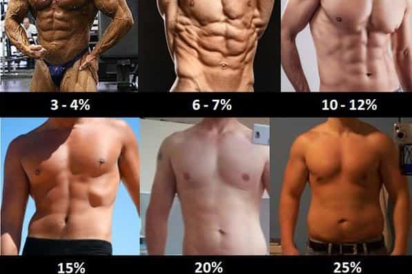

Testosterone replacement therapy is a quick fix. It treats the symptoms of low T (fatigue, decreased motivation, diminished libido, etc), while completely ignoring the root cause—your lifestyle choices. Not to mention that TRT is expensive and potentially dangerous. The following are five goals you should try to achieve before taking the plunge.
1. Achieve sub-15% body fat

Excess body fat is associated with an increase in aromatase production (1). Aromatase is an enzyme that serves the function of aromatizing androgens into estrogens (2). The more aromatase you have running through your veins, the more testosterone is being converted into estrogen (3).
In other words, all that extra body fat you’re carrying around is literally making you softer – not just a softer body, but softer erections and emotions as well. If you’re currently overweight, getting lean will have a tremendous positive impact on your testosterone.
Estimate your current body fat percentage by referring to the image above and make it a goal to achieve sub-15% levels. Leaning down is simply a matter of consuming fewer calories than you burn on a day-to-day basis.
2. Optimize your vitamin D and magnesium levels

Large portions of the American population are deficient in Vitamin D (74%) and magnesium (46%) (4), both of which are crucial for testosterone production.
Men with sufficient vitamin D levels have significantly higher testosterone compared to men who are deficient in it (5). Similarly, magnesium status has been shown to be strongly and independently associated with testosterone (6).
Topping up your vitamin D and magnesium levels is perhaps the simplest way to bring your testosterone back up closer to where it should be.
Your skin synthesizes vitamin D upon exposure to the sun but if spending more time outdoors is difficult, opt for a D3 supplement. If you have a hard time fitting magnesium rich foods (like spinach, almonds, and dark chocolate) into your diet, supplementing with magnesium is a good option as well.
3. Bench your bodyweight for 5 reps

You say you have a hard time building muscle and strength because of low T, but have you actually been hitting the gym on a regular basis? I’m guessing the answer is no.
What if I have been lifting weights regularly for over a year, but am still unable to bench press my bodyweight for 5 reps?
Well, that means you’re doing something wrong.
The two most common mistakes men make in the gym are 1) focusing on the wrong exercises and 2) lifting the same amount of weight week after week.
Forget bicep curls and ab crunches. Your workouts should be centred around gaining strength in big compound exercises like the bench press, squat, deadlift, overhead press, and barbell row. And the key to consistently getting stronger is to keep track of your workouts. If you don’t measure your progress, you won’t improve on it.
This is a mistake that I made for years. I would enter the gym with some recollection of how much weight I lifted the previous week and would complete a number of reps for a given exercise until I felt the “burn”. As a result, I barely made any progress past the initial newbie gains.
Now, I know better and keep track of every single workout – what exercises I did, how much weight I lifted on each, and how many reps I was able to complete. In this way, I always have an eye on improvement during my next workout and am usually able to hammer out that one extra rep when it means making gains. Beyond the newbie level, that’s how strength is built – one rep at a time.
The following is an example of a simple progression model you can use to increase your strength:
Week 1: Bench Press – 145 lbs x 6, 6, 6
Week 2: Bench Press – 145 lbs x 7, 7, 7
Week 3: Bench Press – 145 lbs x 8, 8, 8
Week 4: Bench Press – 150 lbs x 6, 6, 6
Before you jump the gun and make excuses about how you can’t build muscle because of low T, at least put the work in. Show up at the gym. Keep track of your workouts. Focus on getting stronger.
After a year of this if you still haven’t made any progress, that is the point where you can think about opting for TRT. Not before.
4. Eat your fair share of dietary fat

Considering that steroid hormones are synthesized from cholesterol, dietary fat intake is very important for T.
Scientists at the Centre of Sports Medicine found monounsaturated and saturated fat intake to be the strongest dietary predictors of resting T concentrations (7). Polyunsaturated fats like soybean and corn oil, on the other hand, actually lowered T.
Whole eggs, avocados, bacon, and fatty beef are your T-boosting friends. Make sure to keep them in your circle.
5. Get 7-9 hours of deep, uninterrupted sleep daily

If you do everything else right but fail to get enough high quality sleep, your testosterone results will be severely limited. Given that the bulk of your testosterone is secreted while you sleep (11), you have to start making sleep a priority.
Four steps to faster and deeper sleep:
- Cut off night-time exposure to bright screens
- Sleep in complete darkness
-
Keep it cool (between 60-67 degrees fahrenheit (12))
- Make it consistent
Conclusion
Unless you’re suffering from a medical condition that’s stunting your body’s ability to produce testosterone, there’s no need to for TRT. Getting to the root of it – your lifestyle habits – will take longer, but the results will last longer as well. If you go for the quick fix, you’ll see faster results, but there will always be a price to pay at the end.
Read More: The Top 15 Male Foods You Need To Increase Your Test And Get Ripped